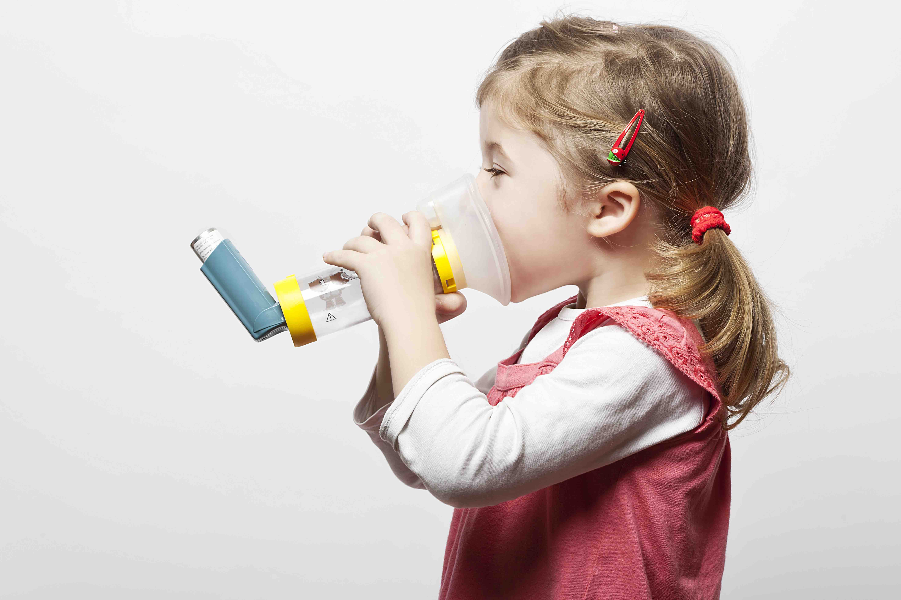

ASMA

Puede describirse como un desorden inflamatorio crónico de la vía aérea, asociado a hiperactividad que se traduce en grados variables de obstrucción y que se presenta con episodios recurrentes de tos, sibilancias, disnea y sensación de opresión torácica. Clínicamente se caracteriza por ser recurrente y tener sibilancias, dificultad respiratoria, opresión torácica y tos; estos síntomas pueden variar en tiempo e intensidad, e incluso en el mismo individuo, con limitación variable del flujo respiratorio. En una gran proporción de pacientes, el asma se manifiesta únicamente con tos, la cual se puede incrementar por las noches o durante el ejércicio.
El manejo se enfoca además del control ambiental, en el uso de antinflamatotios esteroideos o antileucotrienos, la meta del tratamiento es el CONTROL, usando el mínimo de medicamentos posibles. El tratamiento se seleccionara en base a los niveles de severidad y a los niveles de control.En ALERGOCLINIC® nuestra meta es que el niño o adulto con diagnóstico de asma tenga una vida normal, libre del uso de medicamentos, interactuando con la familia y amigos sin ningún tipo de restricción.